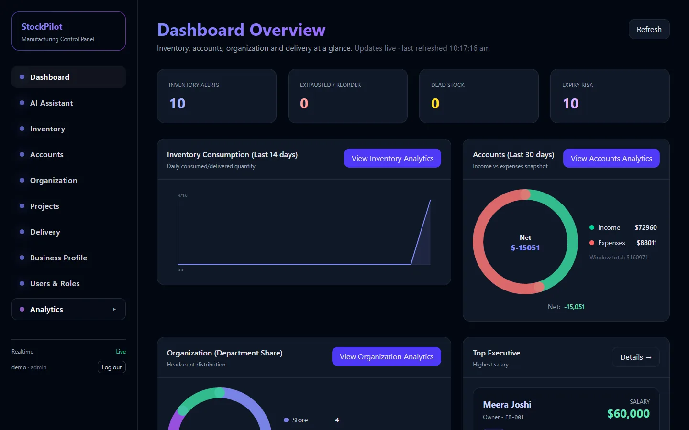
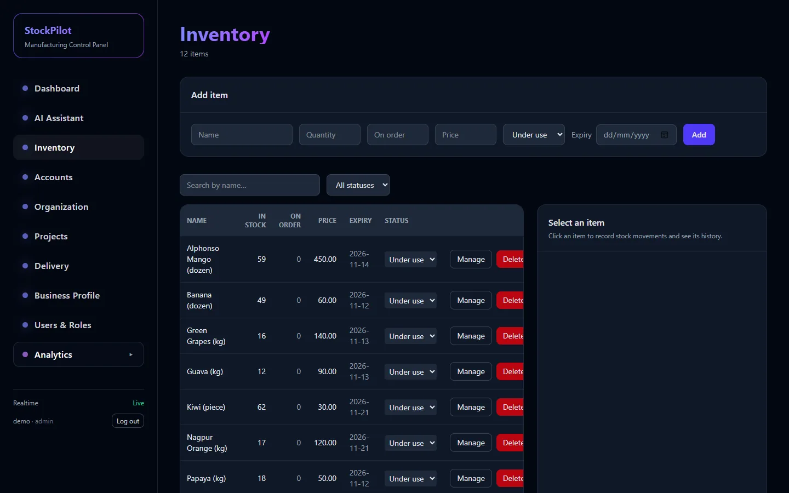
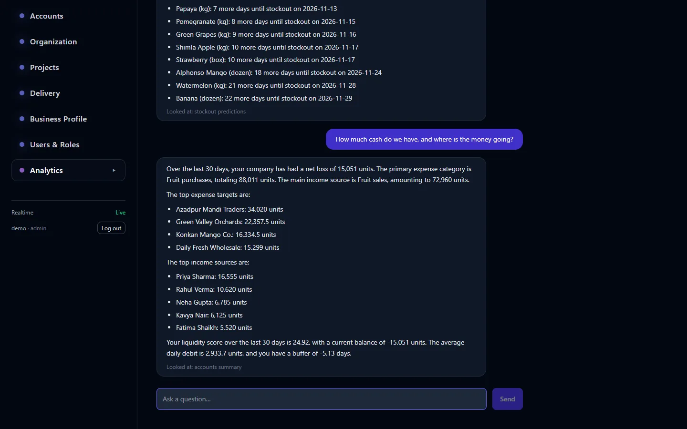
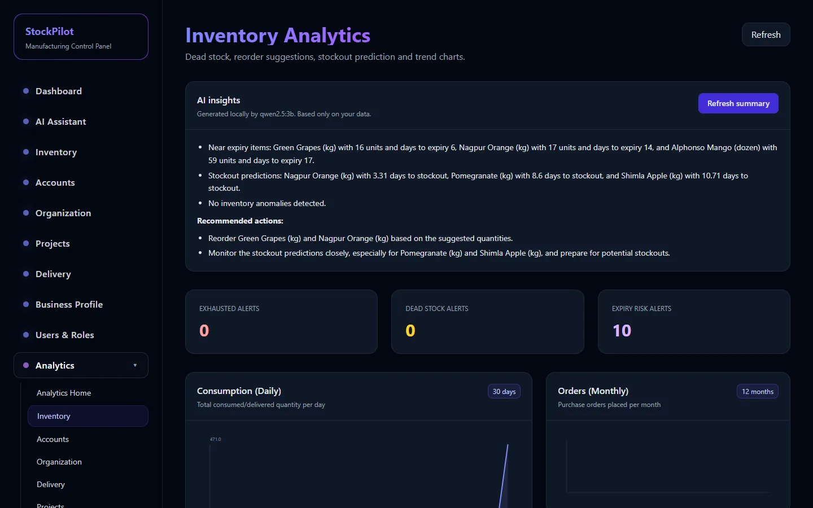
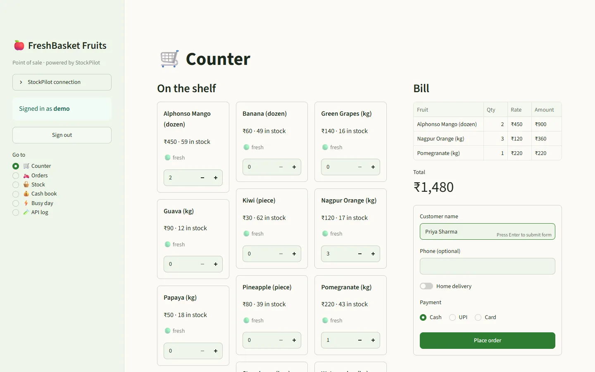
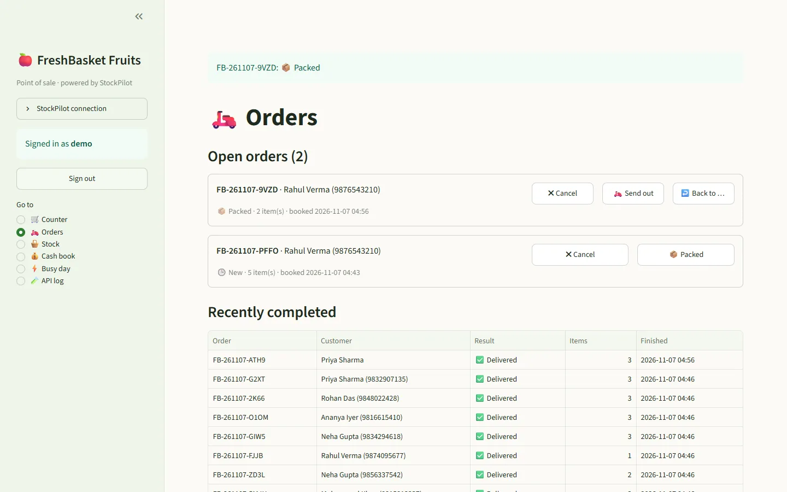
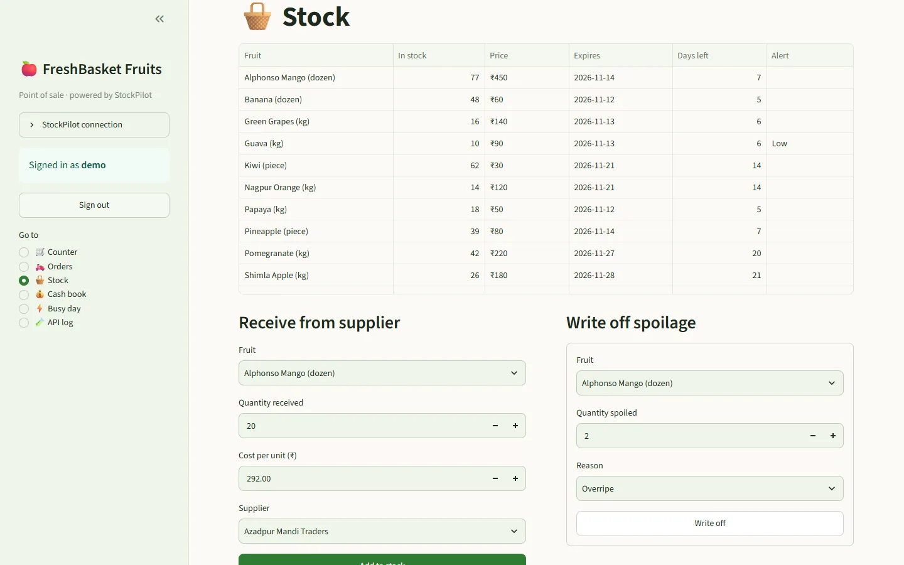
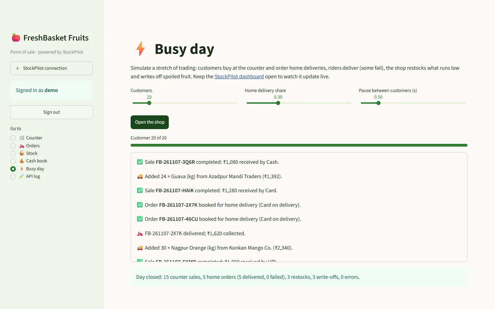
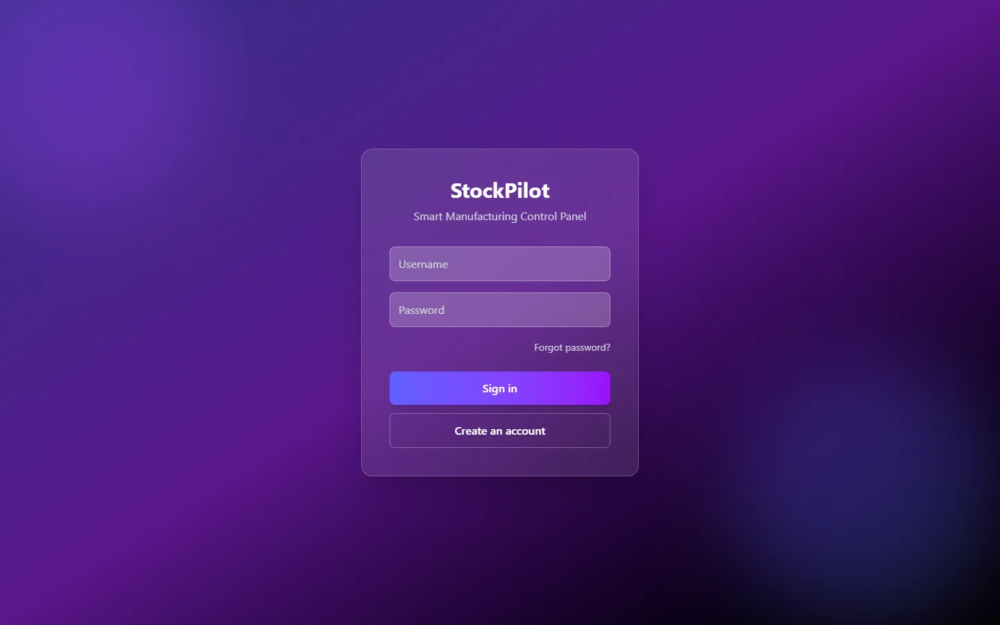

StockPilot is one app for a small manufacturer or shop. It covers inventory, deliveries, accounts, staff and projects. Its dashboards update as soon as anything changes, and a private AI assistant answers questions about your own data.

The modules share one database. A delivery takes stock off the shelf when it leaves, a sale shows up in the accounts, and every chart follows along.
Items with receive, consume, deliver, order and return movements, expiry dates and a full history. Rows are locked during updates, so two people can't oversell the same stock.
Orders move from pending to packed, out for delivery, then delivered. Stock is deducted on dispatch and comes back if a delivery fails or is cancelled.
A credit and debit ledger with the current balance, 30-day net, category breakdowns and a liquidity score.
Employees, departments and reporting lines, drawn as an org chart. The app refuses a reporting line that would loop back on itself.
Tasks with dependencies, CPM/PERT critical path, slack per task and warnings when one person is booked on overlapping tasks.
Reorder suggestions, stock-out forecasts, dead stock, schedule risk and anomaly flags. The figures use median/MAD statistics, so one odd day doesn't trigger false alarms.
Checks the GSTIN checksum, PAN holder type, CIN structure and whether they agree with each other, entirely offline. An admin then approves the profile.
Permissions like inventory.read and accounts.write, one-time password reset links, daily backups and HTTPS hosting.

Writes and their analytics events are saved in one database transaction, so an update can never be lost between the two. A worker turns events into ready-made figures, and PostgreSQL tells the browser when they change.
Failed events retry with backoff and then park as dead for inspection. A bad event can't block the queue or skew a chart.
Every figure can be recalculated from the source rows with one command. That's useful after a fix or a data import.
Anything that can make an HTTP request can join in. The demo fruit shop below is a separate app that uses nothing else.
A small open model runs on your own machine through Ollama, so no data leaves the server. The assistant reads live figures with the same permissions as the person asking, and it can't change anything.


Setting up the model takes one command with Docker, and nothing has to be installed on Windows. See the AI setup guide. It covers both ways to install it and fixes for common problems.
FreshBasket is a separate point-of-sale app for an imagined fruit shop. It shows how a real business would use StockPilot. It also works as the test client: everything it does goes through the public REST API and appears live on the StockPilot dashboards.




Docker runs everything: database, API, analytics worker, web app and backups. Plan on 15 minutes the first time, most of it waiting for the build.
On Windows or macOS install Docker Desktop and start it. On Windows, accept the WSL 2 setup it suggests. On Linux install Docker Engine with the Compose plugin. You need about 4 GB of free RAM, or 8 GB with the AI assistant.
git clone https://github.com/a-code-sri/StockPilot-Enterprise.git
cd StockPilot-EnterpriseCopy the example file, then open .env in any editor and set a database password, a secret key and the first admin account.
# macOS / Linux / Git Bash (PowerShell: copy .env.example .env)
cp .env.example .env
# generate a JWT_SECRET
python -c "import secrets; print(secrets.token_urlsafe(48))"# .env: the lines to change
POSTGRES_PASSWORD=a-long-random-password
JWT_SECRET=paste-the-generated-secret-here
ADMIN_USERNAME=admin
ADMIN_EMAIL=you@example.com
ADMIN_PASSWORD=a-strong-passwordThe first build downloads and compiles everything, which takes a few minutes. Later starts take seconds. Database changes are applied automatically.
docker compose up -d --build
docker compose ps # api, db and web should say "healthy"Open http://localhost:8080 and sign in with ADMIN_USERNAME and ADMIN_PASSWORD. Add other people on Users & Roles.

This starts Ollama in Docker and downloads the qwen2.5:3b model once (about 2 GB). When the download finishes, the AI Assistant page and the Summarize buttons start working.
docker compose --profile ai up -d
docker compose logs -f ollama-pull # wait for "success", then Ctrl+CStart the demo shop, open http://localhost:8501 and sign in with the same StockPilot account. Click Load starter catalogue, make a sale, and watch the StockPilot dashboard change.
docker compose --profile simulator up -d --buildOn a cloud server with a domain name, one extra file adds Caddy, which gets a free certificate that renews automatically. The deployment guide covers the server, DNS, firewall, updates and backups.
docker compose -f docker-compose.yml -f docker-compose.prod.yml up -d --buildStop everything with docker compose down. Your data stays in a Docker volume until you add -v. Backups are written to the backups/ folder every day.